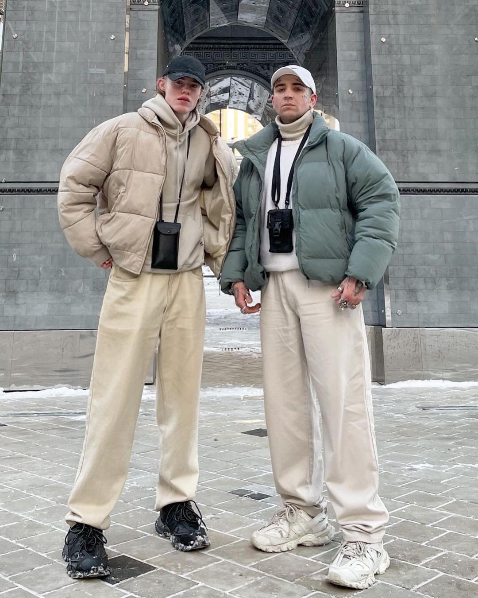

Trending Topics
This part of the text is used to show the Top Trendings around the whole word, so you can be inspired !!!
NIKE x TRAVIS SCOTT - Air Force 1 Low "Cactus Jack"
NIKE x OFF-WHITE - Dunk Low
Nike SB Dunk Low Strangelove
-


Jordans & Dunks
This in particular had a gradual growth along the years and now they are in the top or near there.
The most popular ones:
Grafics Tees
In this year this type of shirts blouded up in all social medias but mostly on Instagram and TikTok, the big reason a lot of people like then is because your can put a personality into the shirts, choosing one with your favorite singer or raper.


-
- 

Puffer Jackets
In this past years the puffers has been wining more popularity in streetwear and finally they got in the main stream, the puffers usually are used with hoodies making overlap with it, transforming the view of the outfit more savage.
Earth Tones
This tendency in particular got into main stream this year but it was present along time ago, they were hyped by Kanye West and with the yeezys, that have a lot of Earth Tones in their sneakers.